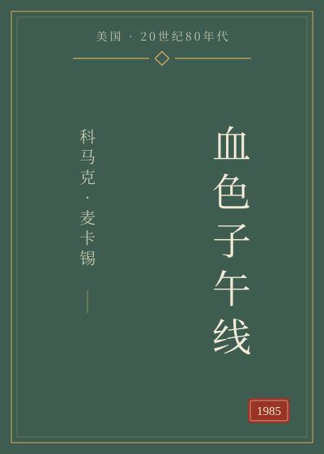
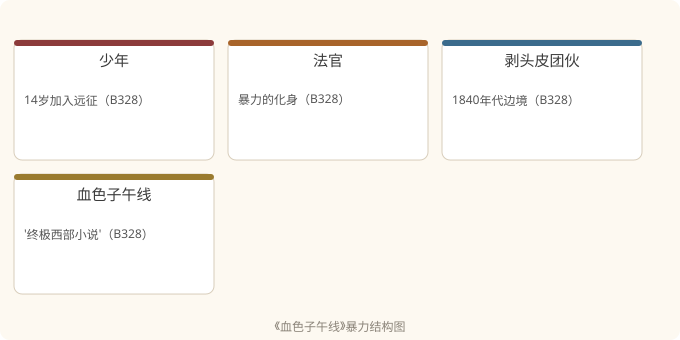

血色子午线
一、基本信息
| 作者 | 科马克·麦卡锡 |
|---|---|
| 成书/出版 | 1985年（Britannica B328：Blood Meridian (1985)——'a critical sensation, hailed as his masterpiece'） Cormac McCarthy — Encyclopaedia Britannica（百科全书） |
| 国别/地区 | 美国 |
| 时代 | 现当代 · 20世纪80年代 |
| 体裁 | 长篇小说 |
| 语言 | 英语 |

《血色子午线》暴力结构图（主题·结构图）
二、创作背景
Britannica（B328）：Blood Meridian——'a violent frontier tale loosely based on historical events'（一部松散取材于史实的暴力边境故事）——'a critical sensation, hailed as his masterpiece'（评论界的轰动，被誉为其杰作）。
Britannica（B328）：小说写一个14岁少年加入1840年代美墨边境'无法无天的剥头皮团伙'，头目为'the judge'（法官）。
Britannica（B328）：首印不足1500册；Harold Bloom 称之为'the ultimate Western, not to be surpassed'（终极西部小说，不可超越）。
三、内容脉络
14岁少年沿美墨边境加入剥头皮团伙的远征（B328：a 14-year-old boy joining a gang of lawless scalp hunters along the U.S.-Mexico border in the 1840s）。
'法官'作为暴力哲学的化身——对暴力的辩护与少年的挣扎（哲学化阐释通说待核；'the judge'为B328所载）。
四、主要人物表
| 人物 | 身份 | 说明 |
|---|---|---|
| 少年（the kid） | 14岁少年 | B328：'a 14-year-old boy'（人名the kid通说待核） |
| 法官（the judge） | 团伙头目 | B328：'the judge'（全名Judge Holden通说待核） |
五、主题与艺术特点
- 暴力与生命：'There's no such thing as life without bloodshed.'（B328 引文）。
- 西部神话的改写（B328 作者语境：Border Trilogy——rewrote and challenged myths of the American West）。
- 文明的边界与'恶'的化身——法官（通说待核）。
六、影响与评论
- Britannica：'a critical sensation, hailed as his masterpiece'（B328）。
Cormac McCarthy — Encyclopaedia Britannica（百科全书） - Britannica：Harold Bloom——'the ultimate Western, not to be surpassed'（B328）。
Cormac McCarthy — Encyclopaedia Britannica（百科全书）
七、阅读建议
难点
- 暴力描写的强度与古语词汇（风格通说待核）。
- 1840年代美墨边境史（墨西哥战争、剥头皮贸易——通说待核）。
- 《血色子午线》中译本（上海译文等——通说待核）。
- 英文原版。
麦卡锡代表作；先读可后接《所有漂亮的马》（1992）。
八、待核实
- 少年'the kid'人名、法官 Judge Holden 全名核对（B328只称'the judge'）。
- 1985年出版（Random House说）待核。
- '首印不足1500册'细节仅B328所载。
- 极简标点风格说法待核（B328未载）。